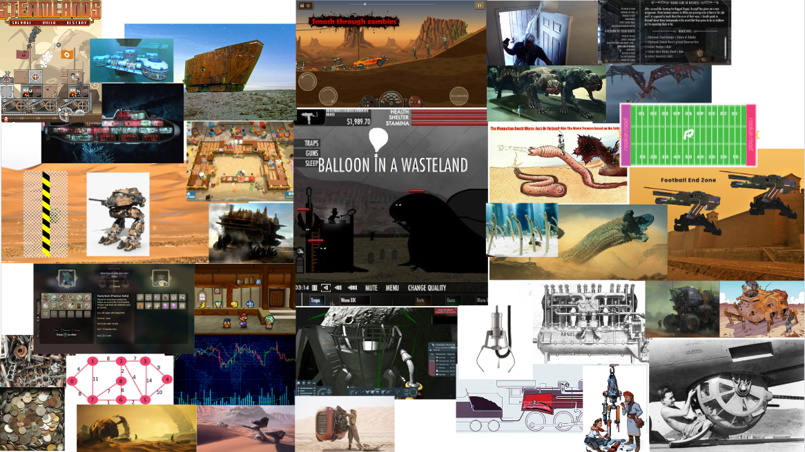
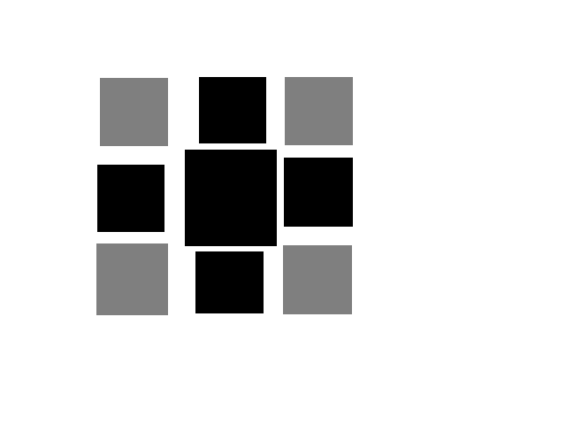

Date:
Posts & Updates
Planning Iron Sea
Date: 20-Jun-2022

The above is a collection of ideas and images from the web that I thought would
reflect my ideas about the development of Iron Sea. Most of these images are
old flash games that I used to play which have influenced my ideas for Iron
Sea.
Although I have released a rough idea of what I imagine Iron Sea to be like, I have been thinking about the foundation of the game. Basically, the game consists of the player as a mech operator in a post-apocalyptic wasteland travelling as a merchant or a mercenary for hire. Quests and missions are given out to the player to make money and gain rewards.
A few key ideas that still need to be solidified:
- monsters will be advancing toward the player. How will the player defend themself? As I want a management mechanic similar to Overcooked, I want the player to stop piloting the mech and deal with the oncoming enemeies separately from mech operation. Should I have a turret on the mech, or a personal weapon on the player? If a turret, would the player have to stop piloting the mech to operate, or would that be too much of a hassle?
- monsters can either drop materials or coins. Should I make the economy coin-based or should I make a bartering system like in Unexplored 2?
- should i have a claw attached to the underside of the mech, or would that be too hard to code? Are there other feasable collection methods, or should the player automatically collect resources when enemies are killed?
- How should I move the mech? Since I am using inverse kinematics to move the legs, there are a few options. I could bind each leg separately with opposing arrow keys. This would force the mech to move only forward. This is important to consider as I want proximity-triggered worm pits. Alternatively, I could simply move the furthest foot from the desired direction. This will allow more control over the mech's movemement.
Although I have released a rough idea of what I imagine Iron Sea to be like, I have been thinking about the foundation of the game. Basically, the game consists of the player as a mech operator in a post-apocalyptic wasteland travelling as a merchant or a mercenary for hire. Quests and missions are given out to the player to make money and gain rewards.
A few key ideas that still need to be solidified:
- monsters will be advancing toward the player. How will the player defend themself? As I want a management mechanic similar to Overcooked, I want the player to stop piloting the mech and deal with the oncoming enemeies separately from mech operation. Should I have a turret on the mech, or a personal weapon on the player? If a turret, would the player have to stop piloting the mech to operate, or would that be too much of a hassle?
- monsters can either drop materials or coins. Should I make the economy coin-based or should I make a bartering system like in Unexplored 2?
- should i have a claw attached to the underside of the mech, or would that be too hard to code? Are there other feasable collection methods, or should the player automatically collect resources when enemies are killed?
- How should I move the mech? Since I am using inverse kinematics to move the legs, there are a few options. I could bind each leg separately with opposing arrow keys. This would force the mech to move only forward. This is important to consider as I want proximity-triggered worm pits. Alternatively, I could simply move the furthest foot from the desired direction. This will allow more control over the mech's movemement.
Self-Made Tools in UI
Something I've recently been thinking of is reusable elements
throughout my projects. An important element to have would be a UI
menu that can scroll in perpendicular directions.

I was thinking about making a grid with a central item that appears
enlarged upon being focused on. The immediate items perpendicular to
the centre would be normal-sized and opaque. The diagonal corner elements
would be half-alpha and normal-sized.
When the user presses one of the arrow keys, the UI would scroll in that direction. Because I like precision, I would eliminate the option to scroll in a diagonal way. Scrolling would constitute each of the elements tweening to the adjacent space in the direction of the user-pressed arrow. If the element would become outside the grid, the element would fade to alpha 0, and delete. Elements coming into the grid would tween position and alpha to fade into their first slot.
An important idea to keep in mind, I found, is the mechanism by which the UI grid will trigger this mass movement of items. I would prefer a short and simple function that triggers the whole movement of the UI. As Godot has pre-made enumerations for Vector2 variables, I could use the direction enums (ie: Vector2.LEFT) as passed-in values.
#This is the pseudocode layout
func input():
match arrow:
LEFT:
GridElement.scroll(Vector2.LEFT)
#etc
This would allow for quick deploy of this custom element in my projects. The internal workings of the element seems a bit fuzzier than I would like, but eventually I will figure it out. I know I would also like the grid to resize itself depending on the size of the item sprites. Additionally, I would ideally want this grid feature to be optional, and have an export variable that decides if it is grid, grid without corners, horizontal only, or vertical only. I also have to keep in mind if there were missing elements within a grid, or rather, uneven columns to rows.
Regardless, this would mean I must have a non-changing variable that houses the contents of the items to be displayed in the grid UI.
I also need a way to track where I am within that non-changing content variable -- an index of sorts -- to denote what is to be displayed, and what is not. This is also important when deciding what items emerge when an arrow is pressed.
So far, I know I need:
1) A list of contents (decidedly within a 2D array representing the grid).
2) An index for those contents (Probably a Vector2 variable denoting the first and second indices of the nested arrays).
3) A single function that triggers the tweening of all the elements in the display.
Alright. Another issue is easy integration of icon data. What format will this menu data take? What will be in the 2D array? I could represent icons directly, or perhaps some text. It is important to consider what the menu will visually represent. Will I have text labels, or will I have icons? Perhaps I will have both options...
If i were to have icons, I could uniformly fit their size to a constant size. Additionally, if I wanted to add text in the menu, I could use the icon method and paint the individual buttons that can be selected. For plain text, there is an advantage that I dont have to paint every button, but represent the menu content with simple strings, and then manipulate the theme in Godot for those strings. For flexibility, I will stick to icons instead of strings.
I have also noticed that the movement of the contents will be all uniform, making this task easier. I can separate a function out only tweening the position of each displayed item, and have another function that selectively tweens the elements' alpha and scale based on their prior position.
When the user presses one of the arrow keys, the UI would scroll in that direction. Because I like precision, I would eliminate the option to scroll in a diagonal way. Scrolling would constitute each of the elements tweening to the adjacent space in the direction of the user-pressed arrow. If the element would become outside the grid, the element would fade to alpha 0, and delete. Elements coming into the grid would tween position and alpha to fade into their first slot.
An important idea to keep in mind, I found, is the mechanism by which the UI grid will trigger this mass movement of items. I would prefer a short and simple function that triggers the whole movement of the UI. As Godot has pre-made enumerations for Vector2 variables, I could use the direction enums (ie: Vector2.LEFT) as passed-in values.
#This is the pseudocode layout
func input():
match arrow:
LEFT:
GridElement.scroll(Vector2.LEFT)
#etc
This would allow for quick deploy of this custom element in my projects. The internal workings of the element seems a bit fuzzier than I would like, but eventually I will figure it out. I know I would also like the grid to resize itself depending on the size of the item sprites. Additionally, I would ideally want this grid feature to be optional, and have an export variable that decides if it is grid, grid without corners, horizontal only, or vertical only. I also have to keep in mind if there were missing elements within a grid, or rather, uneven columns to rows.
Regardless, this would mean I must have a non-changing variable that houses the contents of the items to be displayed in the grid UI.
I also need a way to track where I am within that non-changing content variable -- an index of sorts -- to denote what is to be displayed, and what is not. This is also important when deciding what items emerge when an arrow is pressed.
So far, I know I need:
1) A list of contents (decidedly within a 2D array representing the grid).
2) An index for those contents (Probably a Vector2 variable denoting the first and second indices of the nested arrays).
3) A single function that triggers the tweening of all the elements in the display.
Alright. Another issue is easy integration of icon data. What format will this menu data take? What will be in the 2D array? I could represent icons directly, or perhaps some text. It is important to consider what the menu will visually represent. Will I have text labels, or will I have icons? Perhaps I will have both options...
If i were to have icons, I could uniformly fit their size to a constant size. Additionally, if I wanted to add text in the menu, I could use the icon method and paint the individual buttons that can be selected. For plain text, there is an advantage that I dont have to paint every button, but represent the menu content with simple strings, and then manipulate the theme in Godot for those strings. For flexibility, I will stick to icons instead of strings.
I have also noticed that the movement of the contents will be all uniform, making this task easier. I can separate a function out only tweening the position of each displayed item, and have another function that selectively tweens the elements' alpha and scale based on their prior position.
Date: 9-Apr-2022
An Introduction
Most of the site has been roughed out now.
This site will be the home to my thoughts, ideas, and
updates. Hopefully, someone will find SquareSalt as a
useful resource to reflect on and derrive their own
original thoughts from. There will be no rhyme or reason
to the posts nor their schedule, but irregular updates
may be saved here for later reflection.
Date: 4-Apr-2022